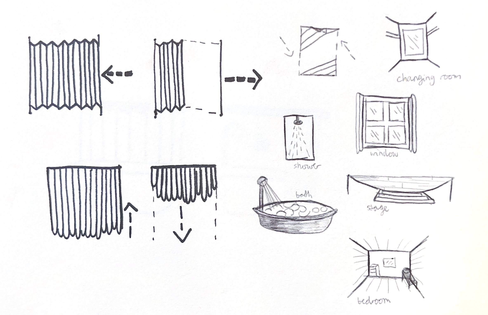
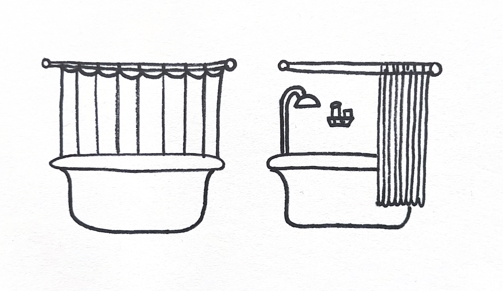
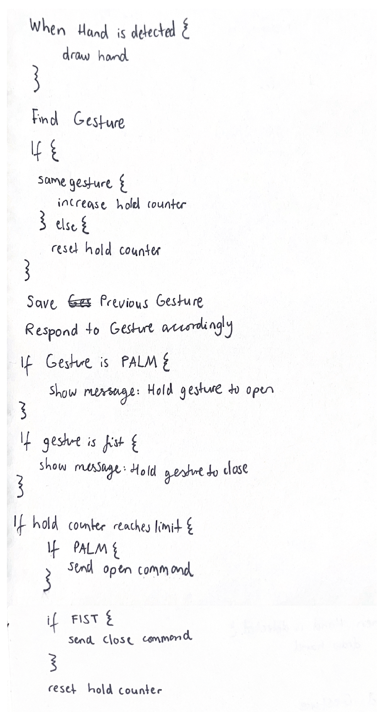
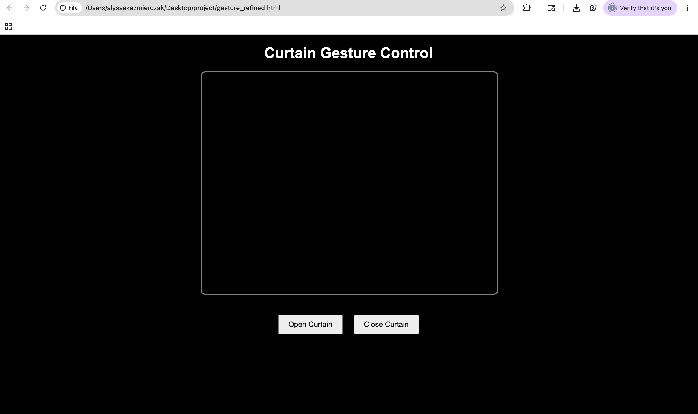
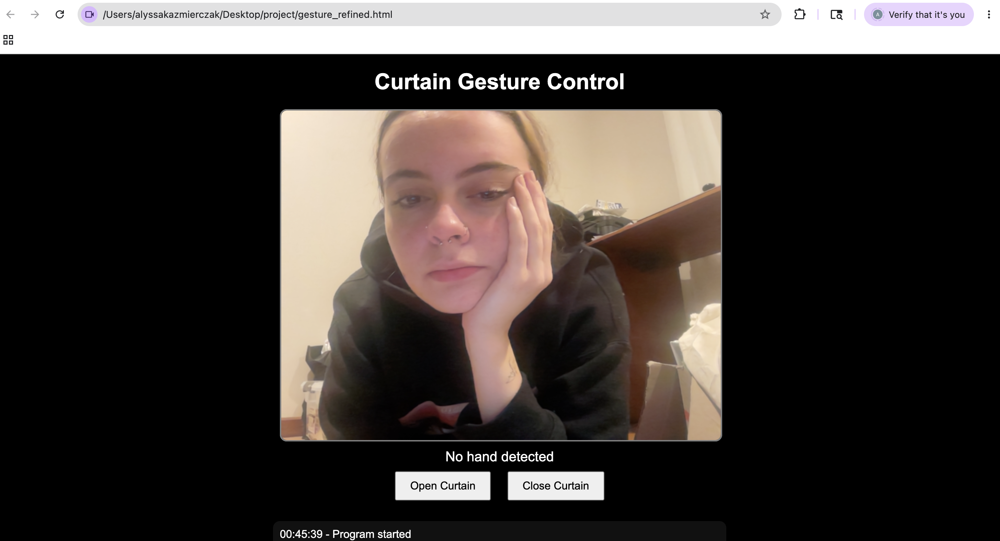
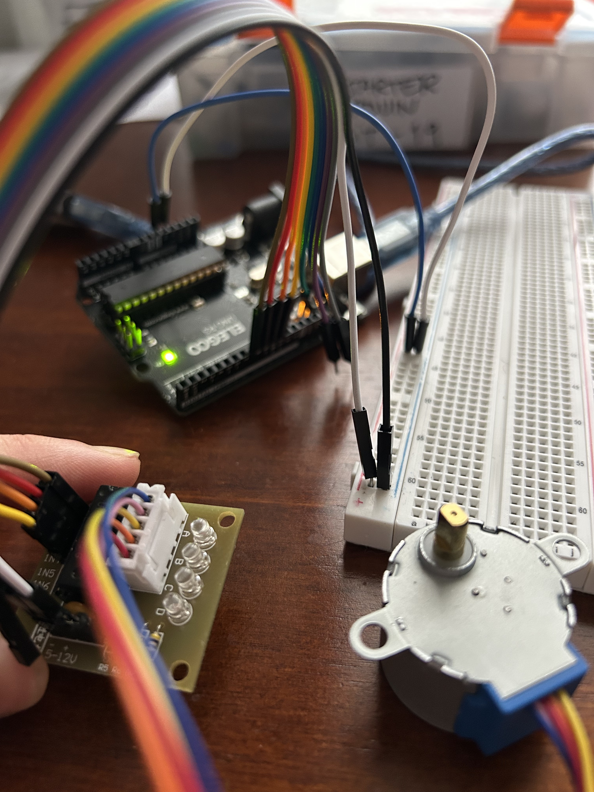
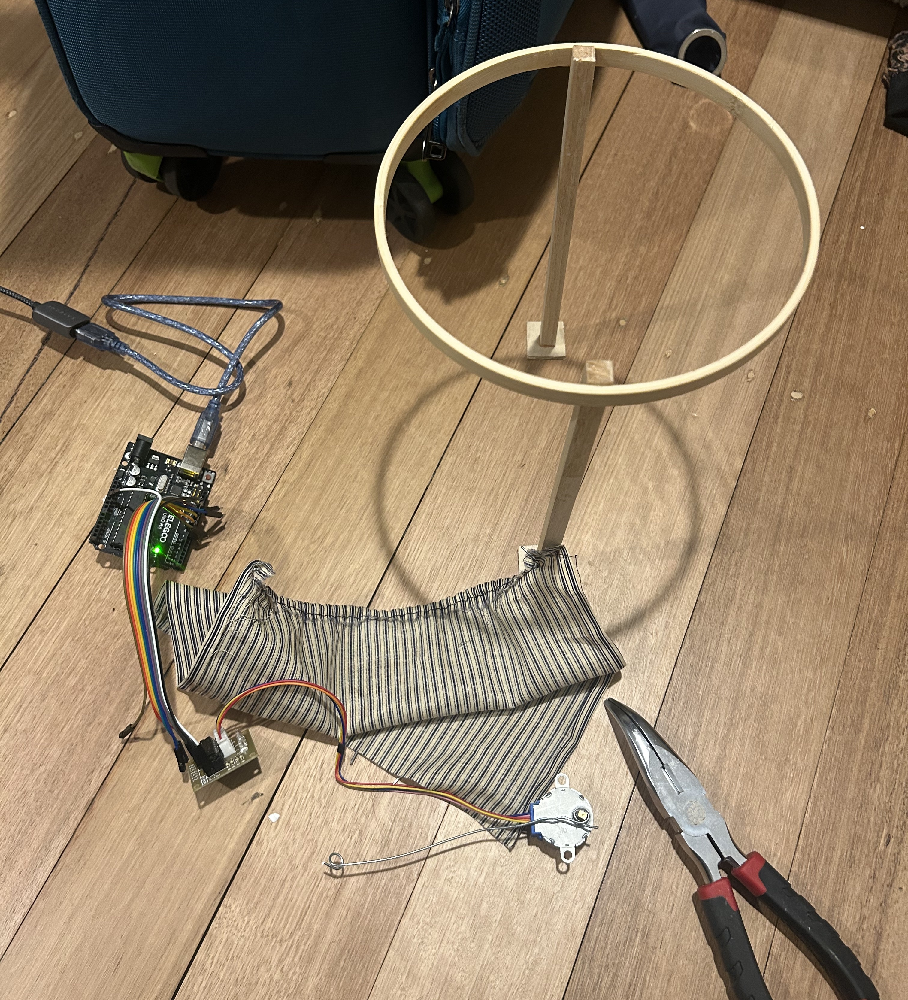

Below are my brain storm sketches and rough ideas
As you can see a lot of these revolve around a curtain
Bath, stage, window - I had an idea to have a curtain that could open and close
using a motor, and this was me attempting to brain storm on how to build on this idea
My original idea was to make a model of a bath, and have the interactive element be the
movable shower curtain, along with possible sound and LEDs.
I was really struggling with an idea for a while. I think that every idea I had did not feel
very exciting to me or maybe just was not very good or plausible.
I came up with this pretty much by breaking everything down into its
most basic concepts.
With physical computing, I can make something move with a motor.
I was thinking of things I could make move.
It brought me back to that challenge we did where we had to note down all the things we interacted
with in a day.
My immediate thought was the door, and I was like maybe that is too simple so what else can you open
and close? Oh a curtain!
What things have curtains? Showers.


Operating the servo motor was straight forward. I wanted to try using the PIR sensor but unfortunately my kit did not have one and time constraints did not allow me to get one in time! I did attempt to make a bathtub with clay, as pictured, but turns out clay is harder to use than I thought and I seem to be not the best at it. I had to park the bath idea for now and focus on my next mission: bridge the gap between browser and arduino! I have (some, and not very good) experience coding in C so I attempted to modify code supplied from https://racheldebarros.com/arduino-projects/control-stepper-motors-with-arduino/ (YouTube video I also watched). The original code was simply for rotating a stepper motor. My pseudo code:

There was a lot of trial and error. I was having wiring issues where the UDL2003 was not getting
power or the arduino was not
recieving any signals. It was hard to tell whether it could be hardware problem or a code problem or
maybe even a power problem?
After a few
attempts at debugging myself I did end up utilising other ways to debug.
I used HTML, CSS and javascript to create a webpage to detect gesture. I used the following
references:
p5: https://editor.p5js.org/sabrinazhai/sketches/eaWcpXVSN
MediaPipe: https://mediapipe.readthedocs.io/en/latest/solutions/hands.html
tutorial on implementation: https://www.youtube.com/watch?v=BX8ibqq0MJU
hand gesture with arduino:
hhttps://www.cytron.io/tutorial/turn-on-led-finger-esp32-mediapipe
gesture recognition in media pipe:
https://toptechboy.com/ai-for-everyone-lesson-29-control-of-real-world-objects-with-gesture-recognition-in-mediapipe/
My inital page:


This is still a work in progress! With the code working to a certain level, the physical aspects of the design need to be finalised. The bath idea has been put on halt for now after the clay attempt. I thought further about what a curtain can mean to brainstorm ideas of adding a media element to my work. I thought about how we use curtains for privacy, which prompted me to reframe this work into one about privacy and security. This links more to the use of a webcam and gesture tracking also.

